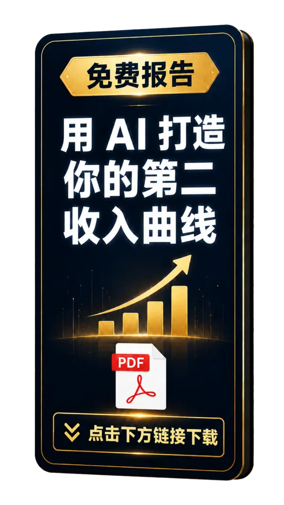

担心工作突然改变
公司会重组，行业会变化，AI也在改变岗位。只靠一份薪水，选择会越来越少。
免费领取《用AI打造你的第二收入曲线》。学会利用你已经拥有的经验和AI，在不辞职的情况下，开始建立属于自己的收入来源。

你不是不努力。只是过去的赚钱方式，太依赖时间、职位和公司。
公司会重组，行业会变化，AI也在改变岗位。只靠一份薪水，选择会越来越少。
网上的方法太多。你不想盲目跟风，也不想下班后再为另一份工作疲于奔命。
你会做报告、管理项目、分析数据和解决问题。这些能力，都可能成为你的产品。
它会帮你看清方向，用一个可以执行的小计划开始。
为什么现在开始，比等到有空更重要。
重新认识你多年积累的经验和知识。
数字产品、内容账号、咨询、自动化服务和知识产品。
从定位、验证到做出第一个简单成果。
AI不应该只是让我们完成更多工作。
AI应该帮助我们拥有更多时间、收入和选择。
AI可以让我们获得自由。
但你需要先迈出第一步。免费领取报告，为自己增加多一个选择。